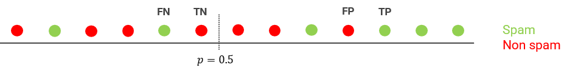

3.6.1 - Metriche di classificazione¶
Nella lezione sulla regressione logistica abbiamo visto come l'algoritmo restituisca un valore di probabilit poi convertito in classe mediante una soglia \(\mu\), che di default vale \(0.5\). Tuttavia, abbiamo sottolineato come questo valore non sia ideale in ogni situazione: chiariamo questo concetto con un semplice esempio.
Precisione, recall ed accuracy¶
Partiamo ricordando che, per il nostro esempio, la classe positiva rappresentata da tutte le mail classificate come spam, mentre quella negativa data dalle mail legittime. Ciascuna predizione fatta da questo tipo di classificatore, che indicato come binario, in quanto deve scegliere tra due possibili classi, pu essere di uno tra i seguenti tipi:
- nel caso in cui il modello classifichi correttamente una mail di spam, parleremo di true positive (TP);
- nel caso in cui il modello classifichi correttamente una mail legittima, parleremo di true negative (TN);
- nel caso in cui il modello classifichi erroneamente una mail di spam come legittima, si parler di false negative (FN);
- nel caso in cui il modello classifichi erroneamente una mail legittima come spam, si parler di false positive (FP).
Generalizzando, abbiamo un true positive (o negative) quando il modello predice correttamente la classe positiva (o negativa), ed un false positive (o negative) quando il modello predice erroneamente la classe negativa (o positiva).
Il rapporto tra questi quattro valori permette di definire delle metriche volte a valutare le performance del nostro classificatore. Vediamone in breve alcune.
Metrica 1: Accuracy¶
L'accuracy la principale metrica utilizzata per valutare le performance dei modelli di classificazione. Informalmente, rappresenta la percentuale complessiva di predizioni corrette effettuate dal nostro modello, e pu essere definita secondo la seguente formula:
dove \(C\) il numero totale di predizioni corrette, mentre \(T\) il numero totale di predizioni. Nel caso della classificazione binaria, la precedente diventa:
Facciamo un esempio numerico. Immaginiamo di aver ricevuto \(100\) email, tra cui dieci di spam. Il nostro spam detector individua correttamente cinque messaggi di spam su dieci, per cui \(TP=5\), e \(FN=5\). Inoltre, dieci messaggi legittimi sono erroneamente indicati come spam, per cui \(FP=10\), e \(TN=80\). Allora:
L'accuracy del modello quindi pari a \(0.85\): in altri termini, il modello sembra essere in grado di gestire correttamente l'\(85\%\) delle mail ricevute.
In realt, questo risultato soltanto apparentemente buono. Per capire il motivo di questa affermazione, pensiamo al fatto che le mail ricevute non sono egualmente distribuite tra spam e legittime: in grande maggioranza, infatti, abbiamo ricevuto mail legittime (il \(90\%\)), e soltanto una sparuta minoranza di spam. Ci implica che il modello stato in realt in grado di individuare soltanto il \(50\%\) dello spam ricevuto, classificando inoltre circa il \(7\%\) delle mail legittime come spam.
Vista sotto questa luce, di conseguenza, l'accuracy assume un aspetto completamente differente, e non sempre efficace nel valutare l'efficacia di un modello. Ci soprattutto evidente quando lavoriamo su un dataset molto sbilanciato, nel quale vi una disparit significativa tra il numero di campioni disponibili per ciascuna classe.
Metrica 2: Precisione¶
Per risolvere alcuni dei problemi dell'accuracy possibile utilizzare diverse altre metriche. Una di queste la precisione, che valuta la proporzione di campioni positivi identificati correttamente.
Analiticamente, la precisione espressa come:
Tornando all'esempio precedente, la precisione sar data dal rapporto tra le mail di spam riconosciute come tali ed il totale di mail riconosciute come spam, includendo anche gli errori fatti sulle mail legittime. Nella pratica:
Di conseguenza, il nostro modello ha una precisione pari al \(50\%\). La precisione ci permette quindi di quantificare l'affidabilit del nostro sistema: un alto valore di \(P\), infatti, ci assicura che una mail identificata come spam sar effettivamente tale. Tuttavia, ci manca ancora un fattore: infatti, come quantificare la capacit del modello di caratterizzare tutto lo spam ricevuto? Per farlo, ci viene in aiuto la terza metrica.
Metrica 3: Recall¶
Il recall espresso dalla seguente relazione:
Nel nostro caso, il recall esprime il rapporto tra le mail correttamente indicate come spam e tutte le mail effettivamente di spam. Numericamente:
Cos come la precisione, il recall del \(50\%\).
Metrica 4: F1 score¶
Come abbiamo potuto vedere, precisione e recall permettono di caratterizzare in maneira adeguata l'affidabilit del nostro modello. Tuttavia, i due valori sono in contrapposizione: come vedremo a breve, migliorare la precisione riduce generalmente il recall, e viceversa. Di conseguenza, opportuno utilizzare una metrica che sintetizzi le due in un unico valore; questa chiamata F1-score, ed espressa come segue:
Nel nostro caso:
Tuning della soglia di decisione¶
Abbiamo detto in precedenza che i valori di precisione e recall sono inversamente proporzionali: aumentando l'uno, diminuisce l'altro, e viceversa. Proviamo a comprendere empiricamente questo concetto facendo un esempio.
Immaginiamo di avere un dataset per lo spam limitato a \(13\) email. Addestriamo il classificatore, ed impostiamo la soglia di decisione \(\mu\) a \(0.6\). I risultati del primo addestramento sono mostrati in figura 1.

I risultati in termini di veri e falsi sono:
Di conseguenza:
Proviamo adesso ad aumentare il valore di \(\mu\), portandolo a \(0.75\). I risultati sono mostrati in figura 2.

In questo caso:
per cui
Vediamo quindi che la precisione aumenta, portandosi al \(100\%\), mentre il recall diminuisce, arrivando al \(50\%\).
Proviamo infine a diminuire la soglia di decisione, portandola al \(50%\), come mostrato in figura 3.

In questo caso:
per cui:
Il recall torna ad aumentare, mentre la precisione diminuisce notevolmente.
Abbiamo quindi visto come la variazione di \(\mu\) agisca su \(P\) ed \(R\), il cui andamento quasi sempre inversamente proporzionale, a meno che non si abbia a disposizione un modello accurato nel \(100\%\) dei casi. Di conseguenza, la detection threshold va scelta a seconda dell'applicazione specifica: nel nostro caso, se non abbiamo paura di perdere mail legittime, potremo tranquillamente abbassare il valore di \(\mu\), aumentando il recall; viceversa, se tolleriamo un po' di spam, possiamo aumentare la precisione alzando la soglia decisionale.